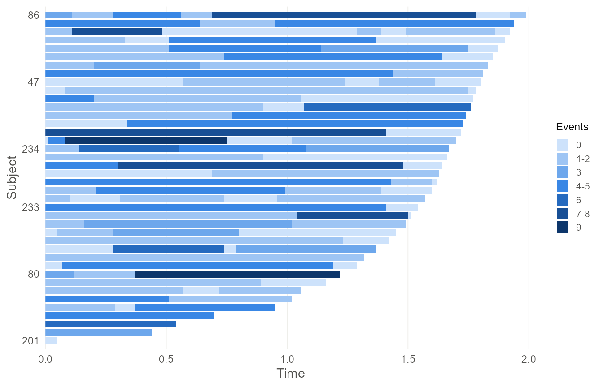
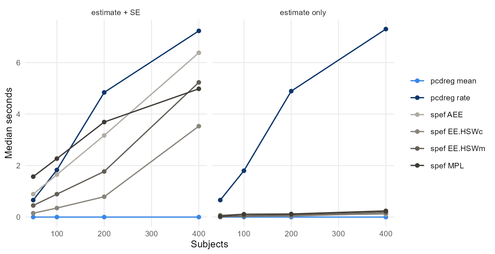

Where pcdreg fits among R packages for panel count data
Source:vignettes/comparison.Rmd
comparison.RmdThis article describes the settings in which pcdreg and
the available alternatives apply.
The landscape
Three classes of R package address recurrent event data. They are not interchangeable.
Exactly observed event times. If you know
when each event happened, reReg,
survival, and the recurrent-event literature apply. The
discussion below concerns panel count data, where only the number of
events between visits is known.
spef, by Chiou, Wang and Yan, is the
established R package for panel count data. It offers a wide range of
estimators through one function,
panelReg(formula, data, method = ...). These include
augmented estimating equations for an informative observation process
(AEE, AEEX), maximum pseudolikelihood and
monotone spline likelihood methods (MPL, MPLs,
MLs), the Sun–Wei and Hu–Sun–Wei estimating equations, and
an accelerated mean model. Its response is
PanelSurv(ID, time, count), one row per examination. All of
these methods target the mean model. At the time of
writing, spef is archived on CRAN — since June 2026, for an
undeliverable maintainer address rather than anything to do with the
code — so it installs from the archive rather than from
install.packages().
pcdreg fits the rate and mean models
with time-varying covariates. Its covariance estimate does not rely on a
Poisson assumption.
What is actually different
The rate model
This is the substantive distinction. The means model constrains the cumulative count; the rate model constrains the instantaneous count. With time-varying covariates, these are different models. They are not two parametrisations of one, and has a different meaning in each.
Simulate from the rate model with a covariate that steps part way through follow-up, and fit both:
set.seed(1)
d <- sim_pcd(300, beta = c(1, -1), lambda = function(t) 8 / (1 + t))
rate <- pcdreg(pcd(id, tstart, tstop, count) ~ x1 + x2, data = d)
mean <- pcdreg(pcd(id, tstart, tstop, count) ~ x1 + x2, data = d,
model = "mean")
round(cbind(truth = c(1, -1), rate = coef(rate), mean = coef(mean)), 3)
#> truth rate mean
#> x1 1 1.004 0.517
#> x2 -1 -1.074 -1.036The rate model recovers the values used to generate the data. The means model does not, and it is not meant to: it is estimating a different quantity. If your scientific question is about the instantaneous risk — the analogue of a hazard ratio — then only the first column of estimates answers it, and a package offering mean models alone cannot produce it.
If the question concerns cumulative burden by time , the means model
is appropriate. pcdreg(model = "mean") and
spef’s EE.HSWc are the same estimator.
Monotonicity
There is a practical consequence. Nothing constrains a fitted mean function to increase, and with a fluctuating covariate it generally does not:
mu <- baseline(mean)$mean
c(increasing = !is.unsorted(mu), decreases_at = sum(diff(mu) < 0))
#> increasing decreases_at
#> 0 92A mean function that falls is not a numerical failure; it is what the estimator returns, and it makes the fitted model awkward to interpret and to predict from. The rate model has no such problem, because it constrains only to be positive, so predicted means increase by construction:
pr <- predict(rate, d, type = "mean")
all(vapply(split(pr$mean, pr$id), function(v) all(diff(v) >= 0), logical(1)))
#> [1] TRUESome spef methods fit with monotone I-splines, so the
baseline increases by construction. This resolves half the
problem. The fitted mean for a subject can still decline when their
covariates decline.
Covariates between examinations
The rate-model likelihood evaluates each subject’s covariate
trajectory at every pooled examination time during follow-up, including
times at which that subject was not examined. A
PanelSurv(ID, time, count) response has one row per
examination and cannot record a covariate value when the subject was not
seen. The counting-process form of pcd() can:
head(subset(d, id == 1), 4)
#> # A tibble: 4 × 6
#> id tstart tstop count x1 x2
#> <int> <dbl> <dbl> <dbl> <dbl> <dbl>
#> 1 1 0 0.38 1 0.898 0.661
#> 2 1 0.38 1.07 3 0.898 0.661
#> 3 1 1.07 1.26 NA 0.898 0.661
#> 4 1 1.26 1.7 4 0.945 0.661Row 3 has count = NA, recording a covariate change at
that time, not an examination. The rate model needs this information.
The one-row-per-examination layout cannot carry it.
Variance without the Poisson assumption
The rate-model likelihood is the likelihood of a Poisson process. It
is a working device, not a claim about the data. Recurrent event data
are usually overdispersed, so standard errors that assume Poisson counts
are far too small. pcdreg reports a robust sandwich by
default:
set.seed(2)
od <- sim_pcd(300, beta = c(1, -1), frailty = 1) # gamma frailty
odfit <- pcdreg(pcd(id, tstart, tstop, count) ~ x1 + x2, data = od)
round(rbind(robust = sqrt(diag(vcov(odfit, "robust"))),
information = sqrt(diag(vcov(odfit, "information")))), 4)
#> x1 x2
#> robust 0.2017 0.2152
#> information 0.0335 0.0295The paper’s simulations put coverage of nominal 95% intervals built from the second row at 15–22%. Both estimators are available; the robust estimator is the default.
Seeing the data first
pcdreg also plots the observation pattern:

Two features of this plot affect the analysis. Alignment of examination times across subjects determines the pooled-grid size and the cost of fitting the rate model. The raggedness of the right edge shows how much of the baseline tail rests on a handful of subjects.
How long they take
Speed is worth measuring, and worth measuring on the question you actually ask of a fitted model. A point estimate on its own is rarely the end of an analysis.
The comparison below uses time-invariant covariates. That is not a
simplification for convenience: PanelSurv(ID, time, count)
has one row per examination and cannot express a covariate that changes
during follow-up, so this is the only ground on which the two packages
fit the same data. Counts are generated exactly, since with fixed
covariates the increments are independent Poisson with mean .
sim_fixed <- function(n, beta = c(1, -1), tau = 2, exam_mean = 4) {
Lambda <- function(t) 8 * log(1 + t)
do.call(rbind, lapply(seq_len(n), function(i) {
nexam <- max(1L, rpois(1, exam_mean))
exams <- sort(unique(round(runif(nexam, 0, runif(1, 0.9 * tau, tau)), 2)))
exams <- exams[exams > 0]
x1 <- runif(1); x2 <- runif(1)
mu <- diff(c(0, Lambda(exams))) * exp(beta[1] * x1 + beta[2] * x2)
data.frame(id = i, time = exams, count = rpois(length(exams), mu),
x1 = x1, x2 = x2)
}))
}
d <- sim_fixed(200)
# pcdreg: the standard error comes back with the fit.
system.time({
f <- pcdreg(pcd(id, time, count) ~ x1 + x2, data = d, model = "mean")
sqrt(diag(vcov(f, "robust")))
})
# spef: a point estimate, then a standard error by resampling.
system.time(panelReg(PanelSurv(id, time, count) ~ x1 + x2, d,
method = "EE.HSWc", se = "NULL"))
system.time(panelReg(PanelSurv(id, time, count) ~ x1 + x2, d,
method = "EE.HSWc", se = "Bootstrap"))Which standard errors are available
The route to a standard error differs by method, and this drives the
timings more than the estimation does. For the Hu–Sun–Wei estimating
equations, se = "Sandwich" and se = "Impute"
both error, leaving the bootstrap:
spef method |
se = "NULL" |
"Sandwich" |
"Impute" |
"Bootstrap" |
|---|---|---|---|---|
AEE |
no SE | no SE | SE | SE |
AEEX |
no SE | SE | SE | SE |
EE.HSWc |
no SE | error | error | SE |
EE.HSWm |
no SE | error | error | SE |
MPL |
no SE | error | error | SE |
pcdreg has no equivalent row. and are by-products of the
last EM iteration, so vcov() is a pair of small matrix
inversions on quantities the fit already computed.
Timings
Median of 3 replicates, in seconds.
bench <- data.frame(
method = rep(c("pcdreg mean", "pcdreg rate", "spef AEE", "spef EE.HSWc",
"spef EE.HSWm", "spef MPL"), each = 4, times = 2),
framing = rep(c("estimate + SE", "estimate only"), each = 24),
n = rep(c(50, 100, 200, 400), times = 12),
seconds = c(
0.00, 0.00, 0.00, 0.00, 0.66, 1.83, 4.84, 7.23,
0.89, 1.65, 3.17, 6.38, 0.15, 0.35, 0.79, 3.53,
0.45, 0.89, 1.77, 5.23, 1.57, 2.27, 3.69, 4.98,
0.00, 0.00, 0.00, 0.00, 0.66, 1.80, 4.89, 7.30,
0.08, 0.11, 0.08, 0.11, 0.01, 0.03, 0.04, 0.14,
0.01, 0.05, 0.08, 0.19, 0.04, 0.11, 0.12, 0.24
)
)
knitr::kable(
stats::reshape(bench, idvar = c("method", "framing"), timevar = "n",
direction = "wide"),
col.names = c("method", "framing", "n = 50", "n = 100", "n = 200", "n = 400"),
row.names = FALSE
)| method | framing | n = 50 | n = 100 | n = 200 | n = 400 |
|---|---|---|---|---|---|
| pcdreg mean | estimate + SE | 0.00 | 0.00 | 0.00 | 0.00 |
| pcdreg rate | estimate + SE | 0.66 | 1.83 | 4.84 | 7.23 |
| spef AEE | estimate + SE | 0.89 | 1.65 | 3.17 | 6.38 |
| spef EE.HSWc | estimate + SE | 0.15 | 0.35 | 0.79 | 3.53 |
| spef EE.HSWm | estimate + SE | 0.45 | 0.89 | 1.77 | 5.23 |
| spef MPL | estimate + SE | 1.57 | 2.27 | 3.69 | 4.98 |
| pcdreg mean | estimate only | 0.00 | 0.00 | 0.00 | 0.00 |
| pcdreg rate | estimate only | 0.66 | 1.80 | 4.89 | 7.30 |
| spef AEE | estimate only | 0.08 | 0.11 | 0.08 | 0.11 |
| spef EE.HSWc | estimate only | 0.01 | 0.03 | 0.04 | 0.14 |
| spef EE.HSWm | estimate only | 0.01 | 0.05 | 0.08 | 0.19 |
| spef MPL | estimate only | 0.04 | 0.11 | 0.12 | 0.24 |
library(ggplot2)
#> Warning: package 'ggplot2' was built under R version 4.5.2
ggplot(bench, aes(n, seconds, colour = method)) +
geom_line(linewidth = 0.6) +
geom_point(size = 1.6) +
facet_wrap(~ framing) +
scale_colour_manual(values = c(
"pcdreg mean" = "#3987e5", "pcdreg rate" = "#0d366b",
"spef AEE" = "#b0aca4", "spef EE.HSWc" = "#8a857c",
"spef EE.HSWm" = "#645f57", "spef MPL" = "#3f3b35")) +
labs(x = "Subjects", y = "Median seconds", colour = NULL) +
theme_minimal(base_size = 10) +
theme(panel.grid.minor = element_blank())
Read the two panels separately, because they reverse.
For a point estimate, spef is faster
than the rate model and stays under a quarter of a second throughout.
The rate model is doing nonparametric maximum likelihood by EM over a
pooled grid, which is more work than solving an estimating equation, and
it is the only method here that admits time-varying covariates at
all.
For an estimate with a standard error, the ordering
changes. pcdreg’s means model returns below timer
resolution at every sample size, against 3.5 seconds for
spef’s EE.HSWc, which is the same estimator
reached by the same estimating equation. The difference is entirely the
bootstrap. The rate model lands among the spef methods
rather than behind them: 7.2 seconds at against 6.4 for AEE
and 5.0 for MPL.
Why the rate model flattens
Its cost scales with , where is the number of distinct examination
times pooled across subjects. Here was 119, 169, 195 and 198 as went 50,
100, 200, 400. Examination times rounded to two decimals on a bounded
interval cannot keep producing new values, so saturates and the cost
becomes roughly linear in rather than quadratic. Times carried at full
numerical precision never tie, grows with , and the same fit becomes
much more expensive. Rounding to the precision at which visits were
actually scheduled is worth doing; see
vignette("data-preparation").
Caveats
Run times for the rate model vary with the data, not just its size: three replicates at took 0.49, 0.66 and 6.59 seconds, since the number of EM iterations depends on the sample drawn. The medians above hide that spread.
MPL fits a monotone spline baseline and is solving a
harder problem than the estimating equations, so its timing buys
something the others do not provide.
Measured on one Windows 11 machine, R 4.5.1, spef 1.0.9,
single threaded. Ratios between methods will travel better than the
absolute numbers.
Which to use
| If you need | Use |
|---|---|
| the rate model, or covariates that change between visits | pcdreg |
| standard errors that survive overdispersion | pcdreg |
| the mean model with the Hu–Sun–Wei estimating equation | either; pcdreg returns the standard error with the
fit |
| many refits, as in a simulation or a bootstrap of your own | pcdreg(model = "mean") |
| informative observation or censoring times |
spef (AEE, AEEX) |
| a monotone spline baseline mean |
spef (MPLs, MLs) |
| an accelerated mean model, or the other mean-model estimators | spef |
| exactly observed event times | not panel count data; see reReg
|
pcdreg is deliberately narrow. It implements two models
with covariance estimation worked out and tested. Use spef
when it provides an estimator you need.
Reference
Sun, D., Guo, Y., Li, Y., Tu, W. and Sun, J. (2024). A robust approach for regression analysis of panel count data. Bernoulli 30(4), 3251–3275. doi:10.3150/23-BEJ1713